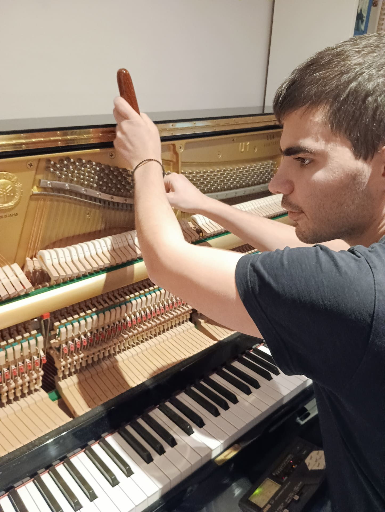
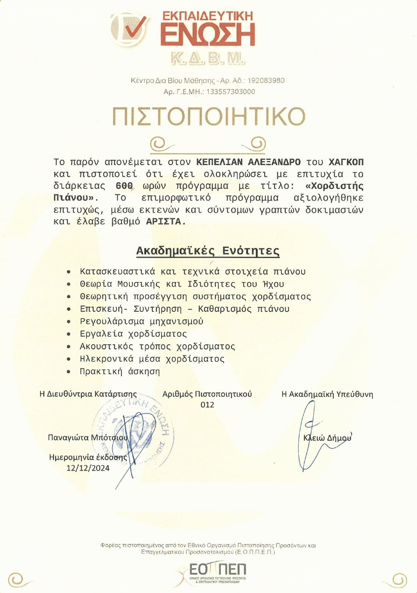

el
el
Take care of your piano, it deserves it
Looking for a professional piano tuner for your piano? Proper maintenance and regular tuning (once or twice a year) is the key to a wholesome, crystal clear sound.
About me
My name is Alexander Kupelian. I am a certified piano tuner, technician and a pianist as well. I mainly drew my inspiration from my teacher and grandfather, Melixe Kupelian.
My journey
Music has played a key role in my life for years, both because of my family and the loss of my vision during my childhood. I started playing the piano at the age of 8. I attended the music schools of Pallini and Alimos and then studied social work at the University of West Attica. At the same time, I built my technical background in piano tuning and maintenance, both in my grandfather's and Nikotian music house's workshops. The knowledge and skills which I acquired culminated in the certification of piano tuning and maintenance by the Εκπαιδευτική Ένωση LLC.
About my grandfather
Earlier years
Melixe Kupelian was a high-class pianist and piano technician in Syria and Lebanon. He possesed a burning passion for the piano as an instrument, a fact which led him to engage with its tuning and maintenance. He achieved his goal after being guided by and cooperating with renowned professionals, as well as through excessive personal effort, utilizing the musicality and listening abilities that he had acquired beforehand.

Life in Greece
After coming to Greece in 1981, he excelled in the field of tuning, maintenance and restoration of all types of pianos. The heartfelt references of his old clients and colleagues to his name even today constitute a solid proof for that fact. In addition, being a keen educator, he managed to pass on his knowledge to his children and grandchildren, so that they could continue his work.
Provided services
- High precision tuning for any type of piano.
- Repair and adjustment of the keys in order to improve their feel and response.
- Maintenance of any kind.
- Instrument fortifying to battle wear and tear.
- In-depth piano appraisal for purchases and sales.
Why choose me?
- Multiple years of experience and passion in the piano tuning field
- Sensitive musical ear as a pianist.
- Transparency and affordable prices.
Music is a language that transcends barriers and unites people from all walks of life, Arthur Rubinstein